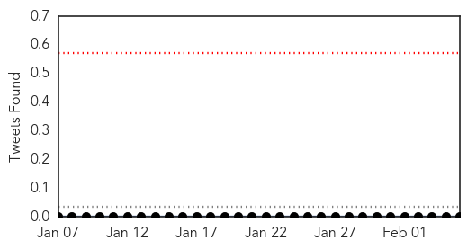
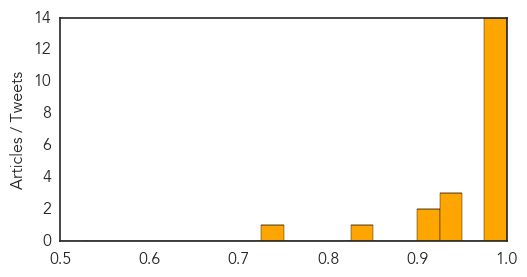

Chikungunya
30-Day Web Trend
2 alerts, 0 warnings

30-Day Twitter Trend
0 alerts, 0 warnings

Article Locations
Article Confidences

Top Articles:
Top Tweets:
-
No tweets found for Feb 05, 2015
Swine Flu
30-Day Web Trend
12 alerts, 5 warnings

30-Day Twitter Trend
0 alerts, 0 warnings

Article Locations

Article Confidences
Top Articles:
- 0.999
- No need to panic on swine flu: Yuvaraj
- 0.999
- Swine flu toll touches 51 in Telangana
- 0.999
- Swine flu in India: 3 more tested positive, total count 30 in Lucknow
- 0.999
- Flu-testing facility to take two more weeks to be operational
- 0.997
- Three more swine flu deaths in Telangana; 39 victims so far
- 0.997
- Swine flu kills five more in Rajasthan, toll now 73
- 0.996
- Czech Republic on brink of nationwide flu epidemic as vaccine proves largely ineffective
- 0.994
- Swine flu claimed 4 lives in Mumbai last fortnight
- 0.990
- Foreign national dies of swine flu in Hyderabad
- 0.990
- Swine flu: 23 positive cases, 4 deaths in Mumbai since Jan 19
- 0.988
- Swine flu is completely curable: health officials
- 0.988
- Stay alert and don’t panic: Health minister
- 0.986
- One more succumbs to swine flu, death toll reaches 68 in Rajasthan
- 0.984
- Swine flu strikes Maharashtra, 4 deaths reported in one week
- 0.948
- Another H1N1 death in tricity
- 0.930
- ‘Swine flu screening at all airports not possible’
- 0.925
- India's Health minister Laxma Reddy ignores dying man during hospital visit
- 0.918
- Swine flu claims three in Vadodara
- 0.901
- Swine flu cases in Lucknow totals to 30
- 0.838
- H1N1 claims one more life in Coimbatore
- 0.728
- One person dies of H1N1 in Bidar
Top Tweets:
-
No tweets found for Feb 05, 2015